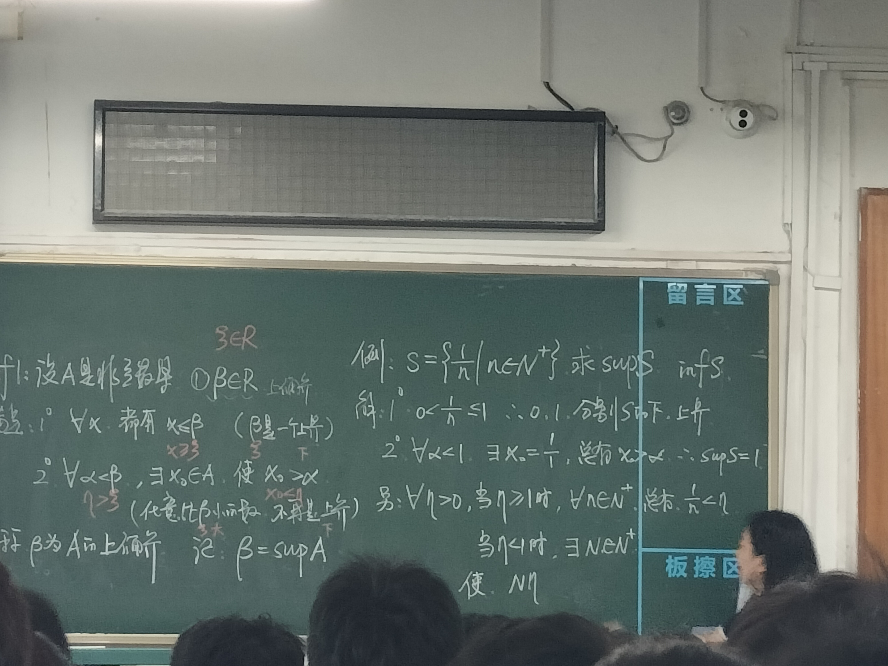

$$ \Huge \textbf{Logically Speaking} $$
$$ \boxed{ \overbrace{\textit{degaokaolization}}^{\small{去高考化}} \text{ Discussion Group | Topic 02}} $$
Personally I recommend reading the book Reading, Writing, and Proving - A Closer Look at Mathematics(Second Edition). Viewing Chapter 2 through 4 is possible. The following note is just a simplified version of the book.
The chemistry teacher currently teaching your class is about to change. Someone says there are only two teachers avaliable. Say teacher RYWang and teacher YBWang. Meanwhile, you happen to know that teacher RYWang is leading his students to IChO, a chemistry competetion worldwide. You are confirmed that the teacher coming next is teacher YBWang.
This can be generalized. If you are given the message "A or B is true", and you know that "A is not true", you can get to know that "B is true". This is an example of a valid argument.
In order to understand an argument, we must be able to read and understand the sentences that compose it. We need to be able to tell whether the sentences in our argument are true or false, and whether they follow logically from the previous ones.
So now for a definition, like you were taught in high school.
Def. A statement is a sentence that is true or false, but not both. \(\#\)
Because English usage and mathematical usage may differ slightly, we must be certain that we understand our statements before we construct arguments. We now carefully study the truth or falsity of statements:
Letters like \(P\) and \(Q\) is only an abstraction for proposition. In the early days of your language learning, they tend to write in the form of "If ... then ...", which is not accurate.
Let's start from the simplest form:
Suppose AUGPath says "The desktop image of my computer is a mountain! ". By looking at his desktop, you find that it's not a mountain. In other words, you can decide on the truth value of that statement. You could say "The desktop image is not a mountain!"
If we have a statement form \(P\) , the negation of \(P\) is the statement form "not \(P\) ." Under what cases should the negation of \(P\) be true or false? We will always use the notation \(¬P\) for "not \(P\) ." If \(P\) is true, then \(¬P\) should be false. If \(P\) is false, then \(¬P\) should be true. We can summarize all the possibilities in a truth table as follows:
$$ \begin{array}{c|c} \mathbf{P}&\lnot\mathbf{P}\\ \hline T&F \\F&T \end{array} $$
We say T for true and F for false. Truth table is a good tool for understanding.
OK, that's the case for only one symbol. Let's look at something that is capable of combining two statements:
Let's investigate the sentence " \(P\) or \(Q\) ". Apart from everyday English language, the "or" in mathematics has a somehow different meaning.
For example, in English, we may say "You can have cake or ice cream", this means that you can have both, but if we say, “The door is open or closed,” it cannot be that the door is both open and closed. The "or" in English statements are often ambiguous. In mathematics, ambiguity is generally frowned upon.
The statement of the form “ \(P\) or \(Q\) ” is called a disjunction. It is usually denoted as \(P\lor Q\) .
In mathematics, a disjunction is true when \(P\) alone is true, \(Q\) alone is true, or both \(P\) and \(Q\) are true. Using the truth table techique, we have that
$$ \begin{array}{cc|c} {P}&{Q}&P\lor Q\\ \hline T&T&T\\ T&F&T\\ F&T&T\\ F&F&F \end{array} $$
Likewize, the "and" in the mathematics( \(P\) and \(Q\) ) has the clear meaning that this will be true when both \(P\) and \(Q\) are true, and false otherwise.
$$ \begin{array}{cc|c} {P}&{Q}&P\land Q\\ \hline T&T&T\\ T&F&F\\ F&T&F\\ F&F&F \end{array} $$
Now let's consider the statement "If \(P\) then \(Q\) ". This statement form is called an implication and is often stated as " \(P\) implies \(Q\) " and written as " \(P\to Q\) ". There are equivalent ways of stating an implication, and some will require some careful thinking on the reader’s part. We will list it here:
The statement form \(P\) in each of these formulations is called the antecedent, and \(Q\) is called the conclusion. Under what conditions is the implication true or false? Let's take a look at the following example:
Suppose we say to our son,
"If you clean your room, then you can go to Henry's house."
Under what conditions would he feel that we had lied? In this example, the antecedent \(P\) is "you clean your room", the conclusion \(Q\) is "you can go to Henry's House". Well, if the son cleans his room and we let him go to Henry’s, everybody is happy. That implication should be true. That implication should be true. So, if \(P\) is true and \(Q\) is true, the whole statement should be true.
Also, it should be as clear to you as it will be to our son, that if he cleans his room and we do not let him go to Henry’s, we lied. So, if \(P\) is true, and \(Q\) is false, the implication should be false.
Now what if he doesn’t clean his room? We never discussed this possibility. So, no matter what we decide here, we have not lied. So, if \(P\) is false, no matter what the truth value is of the conclusion, we will consider the implication to be true.
This will lead us to the truth table
$$ \begin{array}{cc|c} {P}&{Q}&P\to Q\\ \hline T&T&T\\ T&F&F\\ F&T&T\\ F&F&T \end{array} $$
It is often helpful to rephrase a statement, making sure that you maintain the same true and false values. The statement form " \(P\) if and only if \(Q\) ” is called anequivalence, we will write it as \(P \leftrightarrow Q\) . With the description, we have the form \((P\to Q)\land (Q\to P)\) .
$$ \begin{array}{c|c|c|c|}\mathbf{P}&\mathbf{Q}&\mathbf{P}\to\mathbf{Q}&\mathbf{Q}\to\mathbf{P}&\mathbf{P}\leftrightarrow\mathbf{Q}\\\hline T&T&T&T&T\\T&F&F&T&F\\F&T&T&F&F\\F&F&T&T&T\end{array} $$
The statement form "If \(P\) , then \(Q\) " is also written as \(P\implies Q\) , and \(P\) if and only if \(Q\) ” might be written as " \(P \iff Q\) " or " \(P\text{ iff }Q\) ".
Having studied the connectives, we are ready for our definition of a statement form. A statement form is a letter representing an unspecified statement or an expression built from such letters using connectives. Statement forms can be quite complicated. Assigning truth values to them can be done in a step-by-step fashion. Just like arithemetic operations.
A statement form for which the final column in the truth table consists of all T’s is called a tautology. A statement form for which the final column is all F’s is called a contradiction.
Two statement forms, \(P\) and \(Q\) , are said to be (logically) equivalent if \(P ↔ Q\) is a tautology, and two statements are equivalent if they can be obtained from two equivalent statement forms by consistently replacing the letters by English statements.
It's natrual to us that \(\lnot (P\land Q)\) is saying the same thing as \(\lnot P\lor \lnot Q\) . We can list the truth table for that, according to definition.
Thm. Two statement forms \(P\) and \(Q\) are equivalent if and only if they have the same truth table.
Proof. Consider the truth table for the equivalence \(P ↔ Q\) : We know that \(P ↔ Q\) is a tautology if and only if \(P ↔ Q\) has the truth value T (in the table above, this is row 1 and row 4). Finally, \(P ↔ Q\) has the truth value T if and only if P and Q have the same truth value. Since \(P\) and \(Q\) are equivalent if and only if \(P ↔ Q\) is a tautology, this establishes the theorem. \(\square\)
While it is very important to be able to restate something in an equivalent form, it is equally important that you be able to negate a statement. Some useful negations appear in the exercises and problems. The negation of an implication is particularly important in mathematics. If you think about integers and the sentence “If \(x\) is prime, then \(x\) is odd or \(x = 2\) ,” you can see that even a relatively simple implication might be difficult to negate.
Construct the truth table for \(P → Q\) , and the truth table for \(¬P ∨ Q\) . What do you notice?
If all went well, you noticed that \(P → Q\) is equivalent to \(¬P ∨ Q\) , and therefore the negation of “If \(P\) , then \(Q\) ” is “ \(P\) and not \(Q\) .”
Back to the example, maybe you will find that negating
$$ \text { `If } \underbrace{x \text { is prime }}_{P}, \text { then } \underbrace{x \text { is odd or } x=2}_{Q} . " $$
will lead to
$$ \text { `` } \underbrace{x \text { is prime }}_{P} \text { and it is } \underbrace{\text { not the case that } x \text { is odd or } x=2}_{\neg Q} . " $$
The negation of an implication is something you should learn well now because it arises frequently. In the theorem below, we summarize the five most important equivalences that we have covered so far. The first two are often referred to as DeMorgan’s laws.
Thm. Let \(P\) and \(Q\) denote statement forms. The following are tautologies:
DeMorgan's Laws: $$ \begin{aligned}\lnot(P\lor Q)&\leftrightarrow(\lnot P\land\lnot Q);\\\lnot(P\land Q)&\leftrightarrow(\lnot P\lor\lnot Q);\end{aligned} $$
Implication and its negation
$$ \begin{array}{l}(P\to Q)\leftrightarrow(\lnot P\lor Q);\\\lnot(P\to Q)\leftrightarrow(P\land\lnot Q);\end{array} $$
Double negation. \(\lnot(\lnot P)\leftrightarrow P.\)
\(\#\)
You can prove by drawing out all the truth forms.
Exercise. Negate the following: \(P\to Q \land R\) .
Why do we care about tautologies? Well,tautologies allow us to replace one statement by another. For example, suppose you want to show that an integer is odd or prime. You can show that the integer is prime or odd, this won't change things for they are equivalent.
For implications, restating what you want to prove can really make a difference. We have known that \(P\to Q\) is equivalent to \(\lnot P\lor Q\) .
Now consider \(\lnot Q\to \lnot P\) , which is called the contrapositive of the implication \(P\to Q\) . As we compare the truth table, we will find that
$$ \begin{array}{c|c|c} \mathbf{P} & \mathbf{Q} & \mathbf{P} \rightarrow \mathbf{Q} \\ \hline T & T & T \\ T & F & F \\ F & T & T \\ F & F & T \end{array} ~~~~~~~~ \begin{array}{c|c|c} \mathbf{P} & \mathbf{Q} & \neg \mathbf{Q} \rightarrow \neg \mathbf{P} \\ \hline T & T & T \\ T & F & F \\ F & T & T \\ F & F & T \end{array} $$
these are the same!
So the fact that the truth tables are the same and the statement forms are logically equivalent. Hence, we can prove the proposition by proving its contrapositive.
Consider the sentence " \(x^2-1=0\) " So far, we have appoarched such things intuitively. But is it true? false? In fact, it depends on which \(x\) we have in mind. Next, we turn to a rigorous way to make our sentence \(x^2-1=0\) into a statement. But before that, we will review some notations - the set notations.
The idea of set is common. Typically, we think of a set as a collection of objects. We will neither define what a collection, nor an object is. It can be defined precisely by the Axioms, but for the sake of simplicity, we will not describe them now. (The set axiom system the most people use now, is the Zermelo–Fraenkel with the Axiom of Choice. Of course, it is hard to understand at first glance.)
Recall that previously we have learnt a element \(e\) is either belongs to a set \(S\) , or not belongs to a set \(S\) . The first case we will write \(e\in S\) , or \(e\notin S\) otherwise. The set of all possible objects that are considered in the context in which we work is called the universe, or domain of discourse. We will usually denote this by \(X\) or \(U\) . While we are studying real numbers, we probably will set the \(X=\{\text{Real Numbers}\}\) . It might even consist of all cows living in France when it needs to. Some people even allow the universe to be the “set of all sets,” even though this universe is no set at all. This is known as Russell's Paradox. And that's the reason why mathematicians tried hard to axiomize the sets.
We also recall that \(\mathbb Z, \mathbb R, \mathbb Q, \mathbb C\) denotes common sets of numbers. Integer, real, quotient, complex, respectively.
Additionally, we can represent the plane with \(\mathbb R\times\mathbb R\) . The \(\times\) notation between sets means all possible arrangement of elements within two sets. This is later known as Cartesian product of sets.
Now we can talk about slightly more complicated sentences. Think of the difference between the statements “In every box there is a prize” and “In some box there is a prize.” Obviously, if you had to choose (and if it were the same prize), you would go with the first one. In mathematics, in order to determine the truth or falsity of a statement, What we mean should be clear from the context. Letters like \(x\) that stand for elements of the universe are called variables. The phrases “for all,” “for every,” “for some,” or “there exists,” quantify variables. “For all,” or \(∀\) , is the universal quantifier and “there exists,” or \(∃\) , is the existential quantifier.
After agreeing that the universe consists of all real numbers, consider the following statement: "Forall \(x\) , \(x^2-1\leq 0\) " We know that we are asking that for every x, something must happen. It just so happens that this statement is false, but it is still a clear statement. For all x is usually written ∀x. So we could write as
$$ \forall x. x^2-1\leq 0. $$
What follows the words “For all x” in our statement is another sentence that we could denote by p, but since p is a sentence involving x, we write p(x). The statement above is of the form \(\forall x. p(x)\) .
One more remark about the example above. Suppose the universe is (still) the real numbers, but we want to make this a statement about positive integers only. In that case, we can express our statement symbolically as follows:
$$ \forall x. (x\in \mathbb Z^+ {\color{red}\to} (x^2-1\leq 0)) $$
One very common error is to write \(\forall x. (x\in \mathbb Z^+ {\color{red}\land} (x^2-1\leq 0))\) , rather than what we have written above. But let’s think about what this would mean: This would say that “all real numbers are positive integers and satisfy the inequality \(x^2 − 1 ≤ 0\) .” It is probably clear now that this is not what the original statement said.
For a different example, suppose that our universe is the set of integers and consider the sentence, “There is an integer \(x\) such that \(x = 0\) .” This, too, is a statement, and happens to be true. This statement can be expressed symbolically by
$$ \exists x. (x=0). $$
and is read as "there exists a \(x\) so that \(x=0\) ". One more remark about the last example. If we had chosen the set of the real numbers as the universe, we would express our statement symbolically as
$$ \exists x, (x\in \mathbb Z \land x=0). $$
Note that this time we are claiming that x exists, is an integer, and x = 0. To make all these things happen, we must use a conjunction rather than an implication, as the definition already noted. These kind of things are usually needs carful considerations. We will give a table later.
When you negate a statement, you must be 100% clear on what your universe is. You can easily see why, too: if you negate \(x ∈ \mathbb Z\) and \(\mathbb Z\) is your universe, then there are no \(x\) left, but if you negate \(x ∈ \mathbb Z\) and \(\mathbb R\) is your universe, there are still plenty of \(x\) s left to worry about. So make sure that you give careful consideration to your universe before beginning a problem.
We negated conjunctions, disjunctions, and implications. Now we will think about the negation of a quantified statement.
Suppose we have the statement "Every cow is black." How would we negate it?
One pretty useless way is to say "Not every cow is black." It’s better to say "Some cow is not black." So a useful negation of
$$ \forall x. p(x) $$
is
$$ \exists x. \lnot p(x) $$
Similarly, if we say "There exists a black cow," a useful negation is "No cow is black." So a negation of
$$ \exists x. p(x) $$
is
$$ \forall x. \lnot p(x) $$
You will find that sometimes you can negate a sentence directly and other times you need to convert to symbols. Here is another example.
Exercise. Negate the sentence “People who live in glass houses do not throw stones. With the help of the symbol \(g(x)\) meaning \(x\) lives in a glass house. The notation \(t(x)\) will mean that \(x\) throws stones.
$$ \begin{aligned} \lnot (\forall x. (g(x)\to \lnot t(x))) & &(1)\\ \exists x. \lnot(g(x)\to \lnot t(x)) & &(2) \\ \exists x. \lnot(\lnot g(x)\land \lnot t(x)) & &(3) \\ \exists x. (g(x)\land t(x)) & &(4) \\ \end{aligned} $$
The last sentence says that the negation of “People who live in glass houses do not throw stones” is “There exists a person who lives in a glass house and throws stones.” There’s another important thing to notice here. Though there is no obvious quantifier in the sentence “People who live in glass houses do not throw stones,” we all interpret the quantifier as a universal quantifier. If you, or someone else, do not explicitly include a quantifier, (all!) people will assume you meant to insert a universal quantifier.
We emphasize that while it is good to practice these symbolic manipulations, it is also important to understand what you are doing. Sometimes you will find it easier to use the symbolic notation and sometimes you won’t. Make sure you keep in mind what the sentence says, and whether or not your answer seems reasonable. Before you go off on your own, we’ll do a fairly complicated example together.
Example. Suppose our universe is the set of real numbers and we wish to negate the statement “For every rational number \(x\) , there exists an integer \(n\) that is greater than \(x\) .”
Let’s try it. First we note that “For every rational number \(x\) ” means that we are being told that “if \(x\) is a rational number” something will happen. What? There will exist an integer bigger than \(x\) . So this is an implication of the form “For all \(x\) , if \(x\) is a rational number, then there exists an \(n\) such that \(n\) is an integer and \(n > x\) .” Sometimes it is easier to understand a statement if we replace the various subsentences with symbolic representations. We use
$$ \begin{aligned} p(x) & &\text{for } x \text{ is a rational number}\\ q(n) & &\text{for } n \text{ is an integer}\\ r(n,x) & &\text{for } n>x. \end{aligned} $$
Using this notation, we have
$$ ∀x, (p(x) → ∃n, (q(n) ∧ r(n, x))) $$
Let’s try to negate this quantified statement form one step at a time, starting from the outside.
We know that when we negate “for all” it becomes “there exists.” In other words, we can replace \(¬(∀x, · · · )\) with \(∃x, ¬(· · · )\) . So here’s where we are now:
$$ ¬(∀x. (p(x) → ∃n. (q(n) ∧ r(n, x)))) $$
is equivalent to
$$ ∃x, ¬(p(x) → ∃n, (q(n) ∧ r(n, x))) $$
Now we negate the implication. From the previous section we know that \(¬(P → Q)\) is equivalent to \(P ∧ ¬Q\) . We’re up to
$$ ∃x, (p(x) ∧ ¬(∃n, (q(n) ∧ r(n, x)))). $$
We still need to negate \(Q\) , which is the expression \(∃n. (q(n) ∧ r(n, x))\) . At least this is simpler than what we started with! Now \(∃\) will change to \(∀\) and so we need only worry about \(q(n)∧r(n, x)\) . But that’s a conjunction. So the final step is to negate that, and we know the negation of the conjunction will become \(¬q(n) ∨ ¬r(n, x)\) . So here’s where we are now:
$$ ∃x, (p(x) ∧ (∀n, (¬q(n) ∨ ¬r(n, x)))) $$
We’ve done what we were asked to do, in a sense, but our answer is still in symbols. Let’s translate back:
“There exists an x such that x is a rational number and for all n it is the case that n is not an integer or n is not greater than x.”, that is“There is a rational number x such that for all integers n, n ≤ x.”
You will surprisingly find out that the following is somehow related to Calculus. In what follows, unless otherwise stated, all variables are real numbers, and ε and δ represent positive real numbers. Negate all of these.
(1) Let \(a\) be a fixed element of \(\mathbb R\) . For every \(ε\) there exists \(δ\) such that for every \(x ∈ R\) , if \(|x − a| < δ\) , then \(|x^2 − a^2| < ε\) .
(2) For all \(x\) , we have \(x < x + ε\) for every \(ε\) .
(3) For every \(ε\) , there exists \(δ\) such that \(δ < ε\) .
(4) For every \(ε\) , there exists an integer \(N\) such that \(1/n < ε\) for all \(n ≥ N\) .

(Figure from the Advanced Mathematics class, logic symbols are great! )
$$ -\mathscr {E}\text{nd of the note}- $$